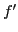
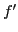
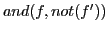
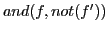

The splitter is intended to replace large BDDs with sets of small BDDs. This is required in two circumstances. First, one of the objectives of preprocessing is to reveal inferences that may be used to reduce the size of the input before search is applied. This is done by applying various BDD operations which may result in some BDDs being fairly large. But SMURFs must be created from small BDDs. So the large BDDs must be split into small ones which are turned into SMURFs. This is accomplished by the splitter. Second, when using the three-address code available from the output of the bmc tool (see Section 15), large BDDs result and the splitter is used to create smaller ones from the larger ones so reasonable sized SMURFs can be created from them.
The splitter can be turned on by the user with the -Sp 1 command
line option. The maximum number of variables to split on is
controlled from the command line using the -do-split-max-vars
<number> switch (Page  ). The number of variables
to split on is 10 by default.
). The number of variables
to split on is 10 by default.
The splitter will first try to break up all big BDDs by selecting a
big BDD  and projecting
and projecting  onto all 10-variable subsets of it's
variable set. We could think of each projection
onto all 10-variable subsets of it's
variable set. We could think of each projection  as a weak
approximation to
as a weak
approximation to  . We collect these projections together and use
branch pruning to simplify the collection. To ``project''
an
. We collect these projections together and use
branch pruning to simplify the collection. To ``project''
an  onto a set of variables means to quantify out all variables
not in that set (see Section 10.5 for details).
onto a set of variables means to quantify out all variables
not in that set (see Section 10.5 for details).
Finally, see how close we've come to  : conjoin all these approximations
: conjoin all these approximations
 together, yielding , and replace
together, yielding , and replace  with
.
If some BDDs still exist with more than 10 variables then the splitter will
break all remaining big BDDs into clauses.
with
.
If some BDDs still exist with more than 10 variables then the splitter will
break all remaining big BDDs into clauses.